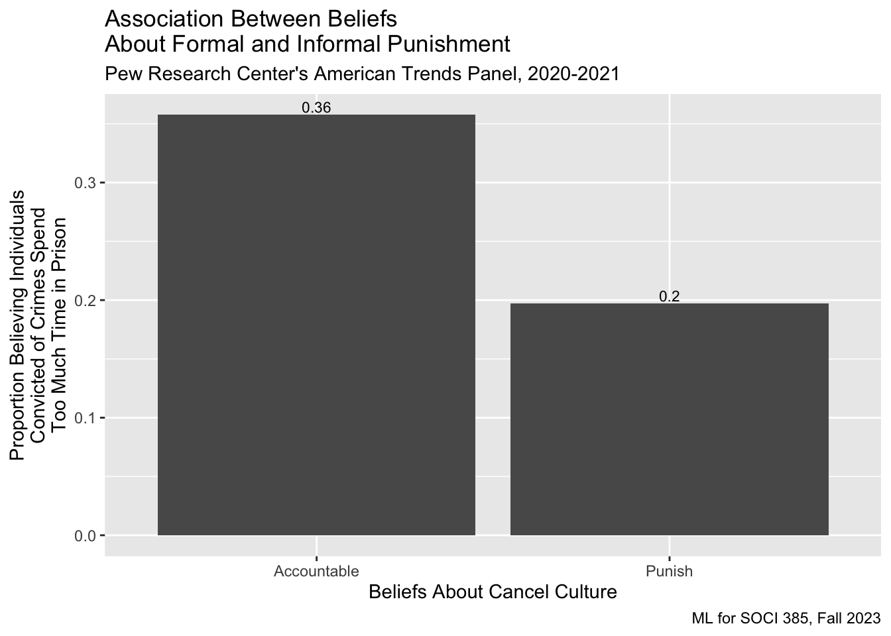
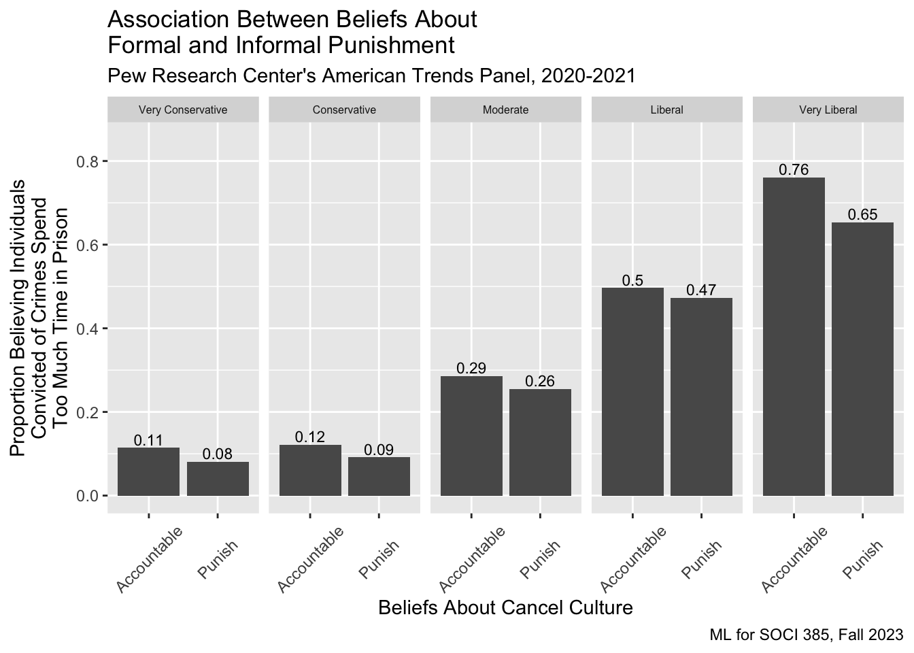

library(tidyverse)
library(kableExtra)
final <- read_csv("https://raw.githubusercontent.com/mjclawrence/soci385_f23/main/data/final_review.csv")Final Review
SOCI 385 - Fall 2023
Set up
This review is based on the “Informal and Formal Punishment” learning guide available at Middlebury’s Sociology Data Lab.
Descriptive Statistics
Summarize dependent variable (crimsent), independent variable (cancul1), and control variable (choose race, ideology, gender, or division).
These are all categorical variables, so responses to any of them could use proportion tables for summaries.
The responses to the crimsent variable are ordered, so you want to assert the levels (from lowest to highest) before making a table.
final <- final |>
mutate(crimsent = factor(crimsent,
levels = c("Too little time",
"About the right amount",
"Too much time")))There are only two responses to the cancul1 question, so we don’t have to order them.
round(prop.table(table(final$cancul1)),2) |>
kbl(booktabs = TRUE,
col.names = c("Response", "Proportion"),
align = rep("c", 1),
caption = "Distribution of Responses to Cancel Culture Question") |>
kable_paper()| Response | Proportion |
|---|---|
| Accountable | 0.59 |
| Punish | 0.41 |
The responses to the ideology variable are ordered, so you want to assert the levels in a way that makes sense before making a table.
final <- final |>
mutate(ideology = factor(ideology,
levels = c("Very Conservative",
"Conservative",
"Moderate",
"Liberal",
"Very Liberal")))round(prop.table(table(final$ideology)),2) |>
kbl(booktabs = TRUE,
col.names = c("Response", "Proportion"),
align = rep("c", 1),
caption = "Distribution of Responses to Ideology Question") |>
kable_paper()| Response | Proportion |
|---|---|
| Very Conservative | 0.09 |
| Conservative | 0.27 |
| Moderate | 0.37 |
| Liberal | 0.19 |
| Very Liberal | 0.08 |
Create and summarize a new categorical variable based on your dependent variable
One option here would be to make a binary variable for one of the responses to the crimsent question. In this example, we’ll make a new variable called crimsent_toomuch that takes a 1 if a respondent answers “Too much time” to the crimsent question and a 0 if they have any other response.
final <- final |>
mutate(crimsent_toomuch = ifelse(crimsent == "Too much time", 1, 0))Include and interpret a figure that shows the mean of your dependent variable by each level of your categorical independent variable
Use the new binary dependent variable created above. Recall that the mean of a binary variable gives you the proportion with a 1, so the means below are the proportions in each level of cancul1 answering “Too much time” to the crimsent question.
final |>
group_by(cancul1) |>
summarise(prop_toomuch = mean(crimsent_toomuch))# A tibble: 2 × 2
cancul1 prop_toomuch
<chr> <dbl>
1 Accountable 0.358
2 Punish 0.197You can use the same setup to create the figure
final |>
group_by(cancul1) |>
summarise(prop_toomuch = mean(crimsent_toomuch)) |>
ggplot(aes(x = cancul1, y = prop_toomuch)) +
geom_col() +
labs(x = "Beliefs About Cancel Culture",
y = "Proportion Believing Individuals\nConvicted of Crimes Spend\nToo Much Time in Prison",
title = "Association Between Beliefs\nAbout Formal and Informal Punishment",
subtitle = "Pew Research Center's American Trends Panel, 2020-2021",
caption = "ML for SOCI 385, Fall 2023") +
geom_text(aes(label = round(prop_toomuch, 2),
vjust = -.25),
size = 3)
Let’s bring in our control variable too.
final |>
group_by(cancul1, ideology) |>
summarise(prop_toomuch = mean(crimsent_toomuch)) |>
ggplot(aes(x = cancul1, y = prop_toomuch)) +
geom_col() +
labs(x = "Beliefs About Cancel Culture",
y = "Proportion Believing Individuals\nConvicted of Crimes Spend\nToo Much Time in Prison",
title = "Association Between Beliefs About\nFormal and Informal Punishment",
subtitle = "Pew Research Center's American Trends Panel, 2020-2021",
caption = "ML for SOCI 385, Fall 2023") +
geom_text(aes(label = round(prop_toomuch, 2),
vjust = -.25),
size = 3) +
facet_grid(.~ideology) +
theme(axis.text.x = element_text(angle = 45, vjust = .5),
strip.text = element_text(size = 6)) +
ylim(c(0,.85)) # stretch out the y axis if labels are cut off`summarise()` has grouped output by 'cancul1'. You can override using the
`.groups` argument.
Inference
Create a binary variable from your dependent variable. Test if the proportions with a 1 for this new binary variable differ significantly at the .05 alpha level between two groups/levels of your control variable.
We already have the binary dependent variable (crimsent_toomuch). We’ll use the two extremes of our control variable in the test.
proptest_df <- final |>
filter(ideology == "Very Conservative" |
ideology == "Very Liberal") |>
droplevels() # This is newproptest_table <- table(proptest_df$ideology,
proptest_df$crimsent_toomuch)Let’s look at the responses…
prop.table(proptest_table, 1)
0 1
Very Conservative 0.90894569 0.09105431
Very Liberal 0.25828970 0.74171030Huge differences here! Three-quarters of respondents identifying as very liberal say that individuals convicted of crimes spend too much time in prison compared to only nine percent of respondents identifying as very conservative.
prop.test(proptest_table)
2-sample test for equality of proportions with continuity correction
data: proptest_table
X-squared = 524.14, df = 1, p-value < 2.2e-16
alternative hypothesis: two.sided
95 percent confidence interval:
0.6066499 0.6946620
sample estimates:
prop 1 prop 2
0.9089457 0.2582897 Test if your categorical dependent variable and your control variable are dependent.
chisq.test(final$ideology, final$crimsent)
Pearson's Chi-squared test
data: final$ideology and final$crimsent
X-squared = 1448.3, df = 8, p-value < 2.2e-16Regression
For our models, we will want to use the binary dependent variable we created above.
Regress your dependent variableon your independent variable
model1 <- lm(crimsent_toomuch ~ cancul1, data = final)
summary(model1)
Call:
lm(formula = crimsent_toomuch ~ cancul1, data = final)
Residuals:
Min 1Q Median 3Q Max
-0.3576 -0.3576 -0.1970 0.6424 0.8030
Coefficients:
Estimate Std. Error t value Pr(>|t|)
(Intercept) 0.357570 0.007063 50.62 <2e-16 ***
cancul1Punish -0.160562 0.011012 -14.58 <2e-16 ***
---
Signif. codes: 0 '***' 0.001 '**' 0.01 '*' 0.05 '.' 0.1 ' ' 1
Residual standard error: 0.4476 on 6821 degrees of freedom
Multiple R-squared: 0.03023, Adjusted R-squared: 0.03008
F-statistic: 212.6 on 1 and 6821 DF, p-value: < 2.2e-16Thirty six percent of respondents who believe that publicly calling out others on social media for posting content that might be considered offensive holds people accountable believe that individuals who are convicted of crimes spend too much time in prison. Approximately twenty percent of respondents who believe that cancel culture punishes people who didn’t deserve it believe that convicted criminals spend too much time in prison. The sixteen point gap between these two groups is significant.
Now add your control variable
model2 <- lm(crimsent_toomuch ~ cancul1 + ideology, data = final)
summary(model2)
Call:
lm(formula = crimsent_toomuch ~ cancul1 + ideology, data = final)
Residuals:
Min 1Q Median 3Q Max
-0.7480 -0.2874 -0.1149 0.2520 0.9196
Coefficients:
Estimate Std. Error t value Pr(>|t|)
(Intercept) 0.114878 0.018033 6.370 2.01e-10 ***
cancul1Punish -0.034442 0.010821 -3.183 0.00146 **
ideologyConservative 0.009187 0.019012 0.483 0.62895
ideologyModerate 0.172551 0.018671 9.242 < 2e-16 ***
ideologyLiberal 0.383687 0.020757 18.485 < 2e-16 ***
ideologyVery Liberal 0.633084 0.024366 25.982 < 2e-16 ***
---
Signif. codes: 0 '***' 0.001 '**' 0.01 '*' 0.05 '.' 0.1 ' ' 1
Residual standard error: 0.4105 on 6817 degrees of freedom
Multiple R-squared: 0.1849, Adjusted R-squared: 0.1843
F-statistic: 309.2 on 5 and 6817 DF, p-value: < 2.2e-16Holding political ideology constant, respondents who believe that cancel culture punishes individuals who do not deserve it are only three percentage points less likely to believe individuals convicted of crimes spend too much time in prison. This difference is much smaller than what we saw in the first model but it is still statistically significant.
Net of beliefs about cancel culture, there is no significant difference in the percentages of conservative and very conservative respondents who believe that convicted individuals spend too much time in prison. However, net of beliefs about cancel culture, there is a significant difference of sixty-three points in the percentage of very conservative and very liberal respondents who believe that convicted individuals spend too much time in prison.
Now add an interaction between your independent variable and your control variable.
model3 <- lm(crimsent_toomuch ~ cancul1 * ideology, data = final)
summary(model3)
Call:
lm(formula = crimsent_toomuch ~ cancul1 * ideology, data = final)
Residuals:
Min 1Q Median 3Q Max
-0.7612 -0.2862 -0.1140 0.2388 0.9192
Coefficients:
Estimate Std. Error t value Pr(>|t|)
(Intercept) 0.113990 0.029550 3.858 0.000116 ***
cancul1Punish -0.033158 0.035530 -0.933 0.350727
ideologyConservative 0.007304 0.033171 0.220 0.825723
ideologyModerate 0.172180 0.031314 5.498 3.97e-08 ***
ideologyLiberal 0.382655 0.032168 11.896 < 2e-16 ***
ideologyVery Liberal 0.647204 0.035107 18.435 < 2e-16 ***
cancul1Punish:ideologyConservative 0.003350 0.040524 0.083 0.934119
cancul1Punish:ideologyModerate 0.002102 0.039385 0.053 0.957444
cancul1Punish:ideologyLiberal 0.009088 0.046206 0.197 0.844086
cancul1Punish:ideologyVery Liberal -0.074190 0.056940 -1.303 0.192636
---
Signif. codes: 0 '***' 0.001 '**' 0.01 '*' 0.05 '.' 0.1 ' ' 1
Residual standard error: 0.4105 on 6813 degrees of freedom
Multiple R-squared: 0.1852, Adjusted R-squared: 0.1842
F-statistic: 172.1 on 9 and 6813 DF, p-value: < 2.2e-16The interaction terms are not significant in this model. While political ideology is associated with beliefs about formal punishment and beliefs about informal punishment, the association between beliefs about formal and informal punishment does not vary by political ideology.